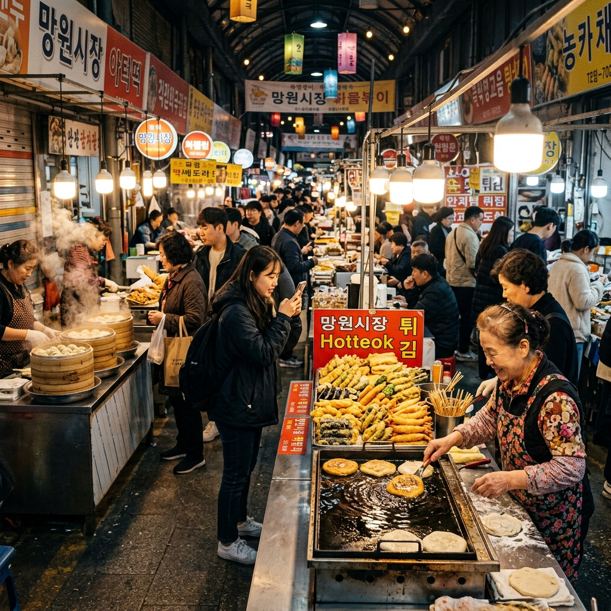
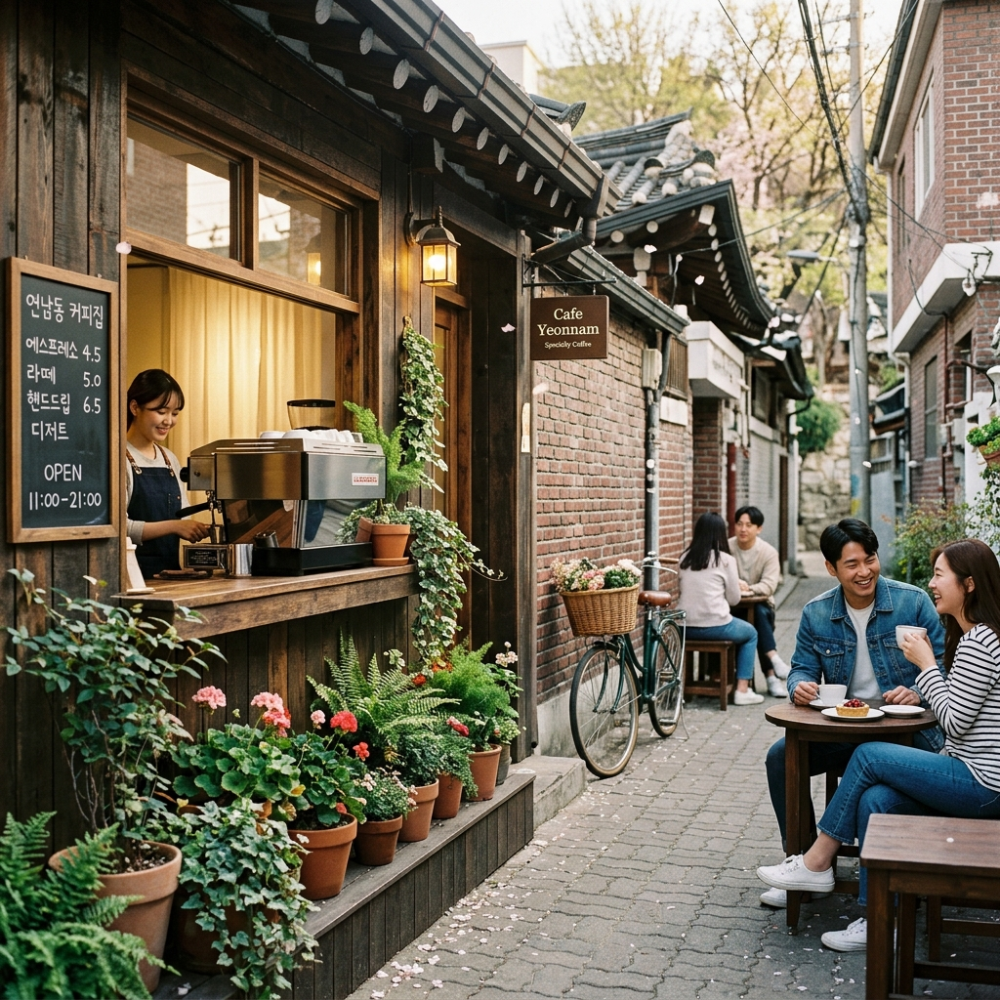
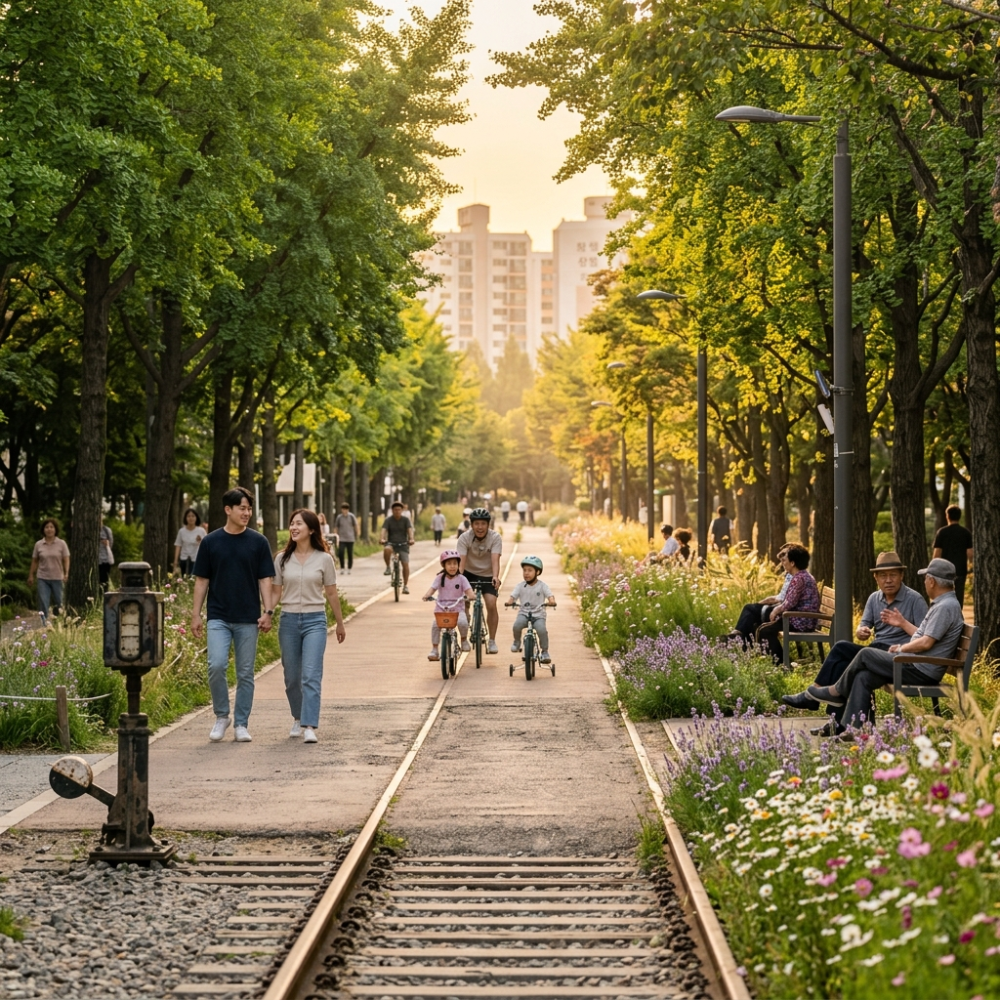

서울에 숲길이 많지는 않습니다.
산이 아닌 평지에서 2km 이상을 녹음 속에서 걸을 수 있는 도심 선형 공원은 경의선숲길이 거의 유일합니다.
2016년 전 구간 개통 이후, 이 공원은 망원·연남·합정 세 동네를 하나의 문화권으로 묶었습니다.
경의선숲길의 진짜 가치는 '끝점'이 아닌 '과정'에 있습니다.
길을 따라 걷다 보면 자연스럽게 독립 카페, 소규모 식당, 갤러리, 공방으로 빨려들어 갑니다.
여행 목적지가 따로 필요하지 않습니다.
걷는 그 자체가 목적이 되는 공원입니다.
망원역 1번 출구에서 나와 왼쪽 방향으로 5분을 걸으면 망원시장 입구가 나옵니다.
시장 초입부터 냄새가 반겨줍니다.
참기름 볶음 향, 간장 양념 향, 그리고 기름에 노릇하게 구워지는 호떡 향이 뒤섞입니다.
망원시장 씨앗호떡 줄은 오전 11시 이전에 방문해야 20분 이내로 해결됩니다.
주말 낮 12~2시에는 40분~1시간 대기도 각오해야 합니다.
씨앗호떡 외에도 꼭 먹어 봐야 할 것이 있습니다.
두툼한 계란말이가 반을 차지하는 분식집 김밥은 어디서도 찾기 어려운 조합입니다.
손으로 직접 빚는 왕만두는 고기·김치 두 종류인데, 갓 찐 만두를 한 입 베어 물면 뜨거운 육즙이 터집니다.

망원역에서 경의선숲길로 진입하면, 홍대 방향으로 가는 '연트럴파크' 구간과는 다른 조용함이 있습니다.
망원 구간은 숲길 이용자의 절반 이상이 마포 주민들입니다.
반려견과 산책하는 어르신, 유모차를 끄는 부부, 이어폰을 꽂고 조깅하는 직장인이 자연스럽게 뒤섞입니다.
관광지화된 연남 구간에 비해 '동네 사람들의 일상'에 더 가까운 공기가 흐릅니다.
망원 구간에서 눈여겨볼 것은 양옆 골목에 숨어 있는 '진짜 망원 카페'들입니다.
SNS에 잘 노출되지 않는 이 카페들은 조용하고 긴 테이블이 있어 혼자 책 읽기나 노트북 작업에 제격입니다.
주말 오전 홍대 카페들이 이미 만석일 때, 망원 구간 카페는 여유 있게 자리를 잡을 수 있습니다.
홍대입구역 쪽에서 경의선숲길로 들어가면 연남동 구간, 이른바 '연트럴파크'가 시작됩니다.
이 구간은 길 양옆으로 카페와 식당이 늘어서 있어, 경의선숲길이라기보다 야외 쇼핑몰 같은 느낌이 납니다.
오전 10~11시에는 아직 조용합니다.
잔디밭에 사람이 별로 없고, 카페들도 방금 문을 열어 신선한 원두 향이 문틈으로 새어 나옵니다.
이 시간대에 방문하면 줄 없이 원하는 카페에 바로 들어갈 수 있습니다.
반면 낮 2~4시 사이 연트럴파크는 완전히 달라집니다.
잔디밭마다 피크닉 돗자리가 깔리고, 카페마다 대기 인원이 문밖까지 넘칩니다.
주말 오후 연남동을 방문할 계획이라면 대기를 각오하거나, 사전에 네이버 예약 가능한 카페를 예약해 두세요.
연남동 카페들이 수년간 꾸준히 사랑받는 이유는 한 단어로 요약됩니다 — '독립성'입니다.
대형 프랜차이즈가 들어올 자리에 바리스타가 1년에 한 번 직접 해외 농장을 다녀오며 원두를 선별하는 스페셜티 카페가 자리합니다.
패스트리를 대량 납품받는 대신, 매일 아침 소량만 굽는 파티세리가 있습니다.
레코드판을 틀어 놓고 커피와 맥주를 함께 파는 보사노바 카페도 있습니다.
연남동 카페 오너들은 임대료 압박을 버티며 자신만의 색을 유지하고자 노력합니다.
그 노력이 이 골목을 '몇 번을 와도 새로운 발견이 있는 동네'로 만들었습니다.
단, 폐업·이전이 잦습니다.
6개월 전 블로그 포스트나 유튜브 영상에 소개된 카페가 방문 시 사라져 있는 일이 종종 있습니다.
반드시 방문 당일 구글맵 또는 네이버 지도에서 영업 여부를 확인하고 출발하세요.

연남동이 카페의 동네라면, 망원동은 식당의 동네입니다.
특히 망원2동 주민센터 인근 골목은 요즘 가장 주목받는 다이닝 골목입니다.
이 골목의 공통점은 규모가 작다는 것입니다.
대부분 10석 이하의 소규모 식당으로, 오너 셰프가 직접 홀을 보는 경우가 많습니다.
메뉴도 단출합니다.
파스타 3가지, 피자 2가지, 오늘의 수프 1가지 — 이 정도 구성이 이 골목 식당들의 일반적인 메뉴판입니다.
음식이 단출한 대신 재료에 신경을 씁니다.
직접 생면을 뽑거나, 파머스마켓에서 채소를 사 오거나, 특정 지역 농가에서 정기 배송받은 달걀만 씁니다.
평일 점심은 비교적 여유롭고, 주말 저녁은 1시간 이상 대기가 생깁니다.
망원·연남 일대는 같은 코스라도 방문 요일에 따라 경험의 질이 크게 달라집니다.
평일 추천 코스는 시장 → 숲길 → 식당 순서입니다.
오전 10시에 망원시장에 도착하면 줄 없이 씨앗호떡을 먹을 수 있습니다.
점심은 망원동 다이닝 골목에서 예약 없이 입장 가능하고, 오후에는 연남동 카페에 바로 들어갈 수 있습니다.
주말 추천 코스는 시장 → 카페 → 저녁 순서로 시간을 나눠야 합니다.
주말 오전 9시 이전에 시장에 도착해 씨앗호떡과 김밥으로 간식을 해결하고, 오전 10~12시에 연남 카페(미리 예약)를 방문합니다.
낮 시간에는 경의선숲길을 산책하고 잔디밭에서 쉬며 피크 타임을 흘려보냅니다.
저녁 5시 이후 망원동 포장마차 거리로 이동해 막걸리 한 잔으로 하루를 마무리합니다.
경의선숲길 망원 구간 일부에는 맨발 황토 전용 보행로가 있습니다.
신발을 벗고 걸으면 황토의 미세한 알갱이가 발바닥을 지압하는 효과를 줍니다.
뜨거운 여름에도 황토 길은 나무 그늘 덕에 서늘하게 유지됩니다.
아침 일찍 방문하면 이슬에 젖은 황토가 더욱 시원하게 느껴집니다.
맨발 걷기 전 발 세척 시설이 있으니 이용하고 시작하세요.
이 작은 경험 하나가 망원동 산책을 '서울에서 가장 특이한 힐링 코스'로 기억하게 만들어 줍니다.
망원동을 방문하면서 당인리 문화창작발전소를 놓치는 분들이 많습니다.
이곳은 한국전력이 운영하던 화력발전소 부지를 문화 창작 공간으로 전환한 곳입니다.
외벽의 거대한 굴뚝과 철골 구조물이 그대로 남아 있어 독특한 인더스트리얼 분위기를 자아냅니다.
내부에서는 전시회, 음악 공연, 미술 작가 입주 프로그램이 상시 운영됩니다.
경의선숲길 합정 구간 끝자락에 위치해 있어, 망원~합정 방향으로 걷다가 자연스럽게 들를 수 있습니다.
사진 찍기에도 최고의 장소로, 영화나 드라마 촬영지로도 자주 등장합니다.

망원·연남 일대는 사계절마다 다른 매력을 발산합니다.
봄에는 경의선숲길 홍대 구간의 벚꽃 터널이 SNS를 뒤덮습니다.
라일락과 철쭉이 이어 피면서 4~5월 내내 걷기 좋은 환경이 이어집니다.
여름은 초록 그늘이 깊어지는 계절로, 해 질 무렵의 경의선숲길 산책이 최고의 여름 힐링이 됩니다.
가을에는 단풍이 숲길 전체를 물들이고, 코스모스와 억새가 길 가장자리를 장식합니다.
겨울은 카페 시즌입니다.
연남동 카페들의 크리스마스 장식이 인스타그램을 채우고, 따뜻한 실내에서 핫초코 한 잔을 즐기는 것이 최고의 겨울 코스입니다.
이 동네는 자가용으로 오면 절반 이상의 에너지를 주차 찾기에 쓰게 됩니다.
주말에는 합법 주차장도 만차가 기본이고, 노상 주차를 하면 견인 위험이 있습니다.
6호선 망원역이 가장 편리하며, 공항철도·경의중앙선 홍대입구역도 경의선숲길 접근에 최적입니다.
두 역 모두 도보 5분 이내로 숲길 진입이 가능합니다.